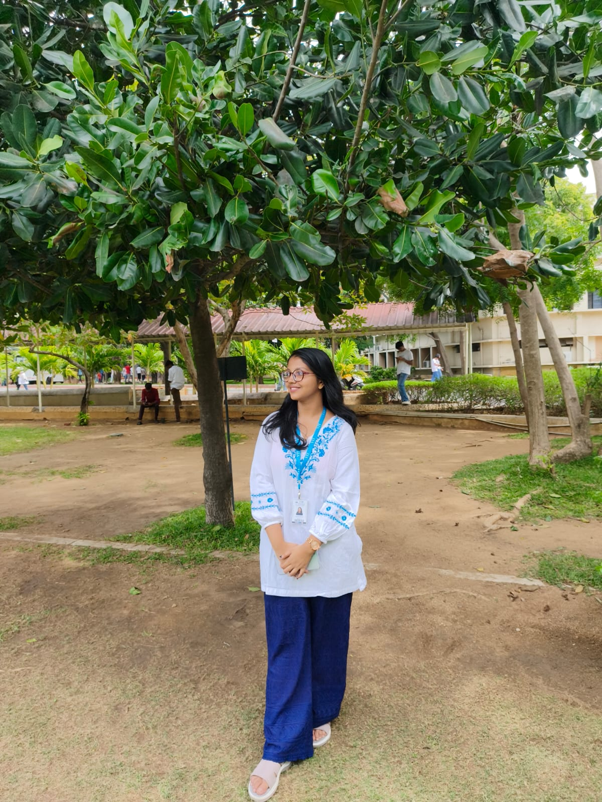

Programming
Python, programming fundamentals, NumPy
COMPUTER SCIENCE STUDENT
I'm a first-year Computer Science and Engineering student interested in programming, artificial intelligence, and building practical solutions through technology.

01 / ABOUT
Exploring technology, one idea at a time.
I'm a first-year CSE Core student developing my foundation in programming and software development. I enjoy learning how technology works and applying that knowledge to projects.
My interests include web development, machine learning, and interdisciplinary problem-solving. I believe that every project is an opportunity to learn something new and improve my skills.
Build a strong technical foundation.
Turn ideas into working projects.
Learn from feedback and experimentation.
02 / SKILLS
My current technical toolkit and areas of exploration.
Python, programming fundamentals, NumPy
HTML, CSS, JavaScript, responsive layouts
VS Code, GitHub, Jupyter Notebook
Machine learning, audio processing, data analysis
These are learning areas, not claims of professional expertise.
03 / PROJECTS
Small projects, practical experiments, and ideas in progress.
A beginner machine-learning project using penguin measurements to predict species with classification algorithms.
View on GitHub ↗A responsive book-collection website featuring a curated collection and a saved-books section.
View on GitHub ↗ (Click here to access Live Website Link) ↗An interdisciplinary project exploring plant acoustic signals, background-noise filtering, and machine learning for stress detection.
Development in progress
04 / CERTIFICATIONS
Workshops, certifications, and experiences from VIT GRAVITAS.
WORKSHOP · VIT GRAVITAS
Hands-on workshop on building a mini drone with proper controller to navigate and learning the aerodynamics behind it.
2026
View Certificate ↗WORKSHOP · VIT GRAVITAS
A guide to operating Linux and its advantages over Windows and other OS.
2026
View Certificate ↗WORKSHOP · VIT GRAVITAS
Hands-on workshop on basics of robotics.
2026
View Certificate ↗04 / EDUCATION
CURRENTLY PURSUING
VELLORE INSTITUTE OF TECHNOLOGY (VELLORE)
First Year · CSE Core
Building foundations in computing, programming, and problem-solving.
05 / CONTACT
Interested in technology, collaborative projects, or exchanging ideas? Feel free to reach out.
Send me an email ↗